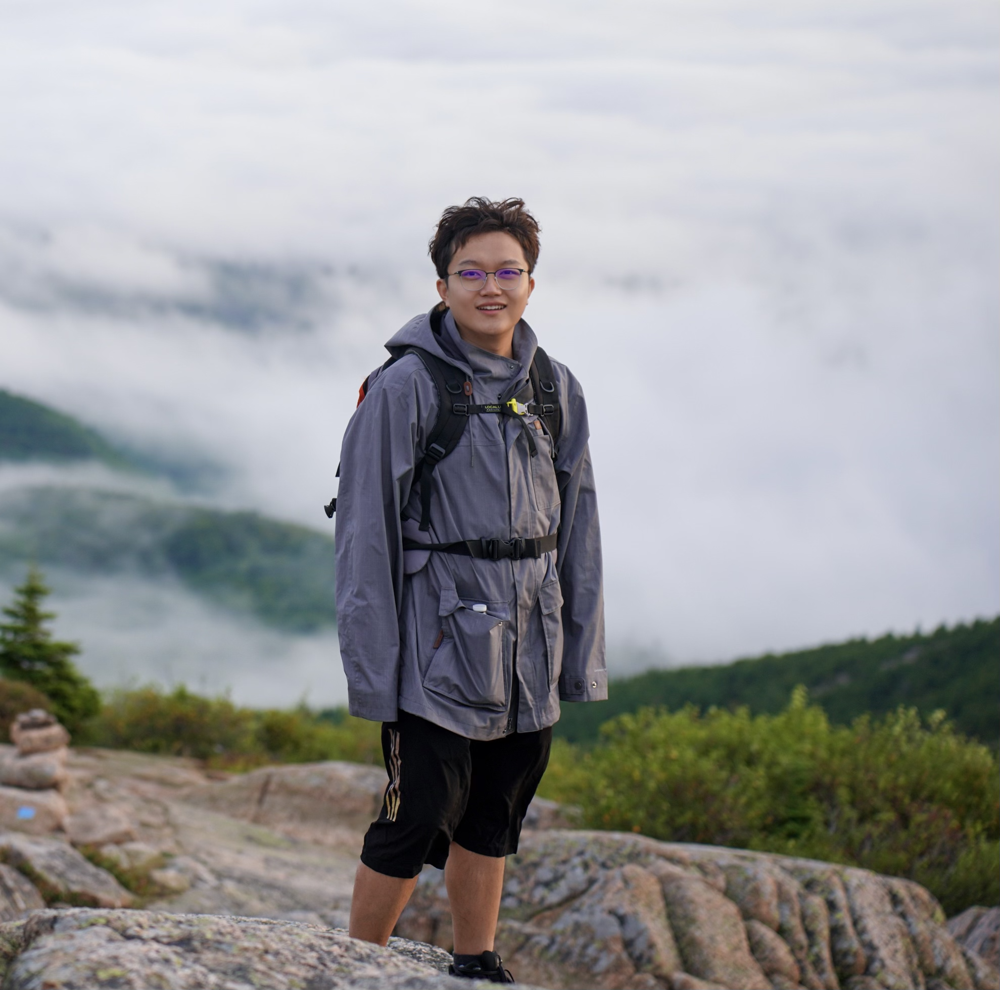
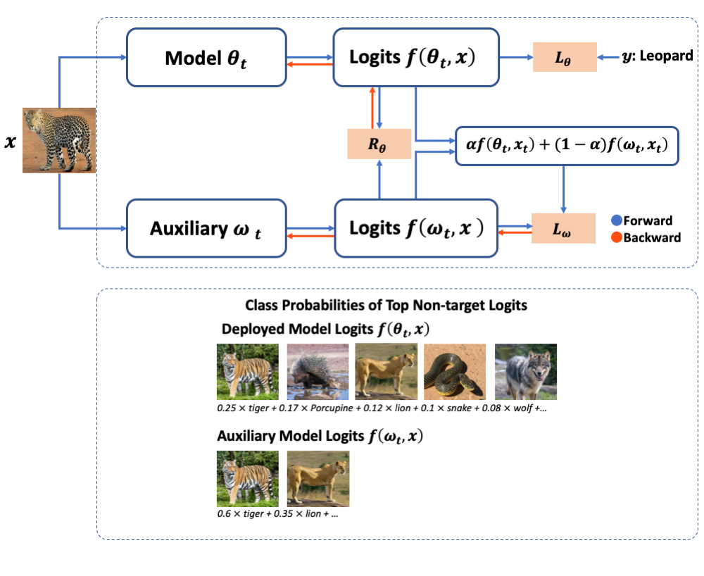
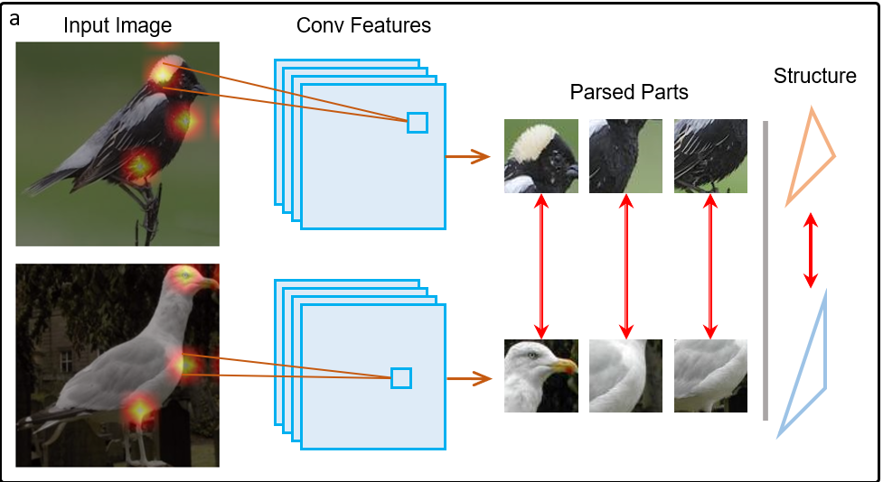
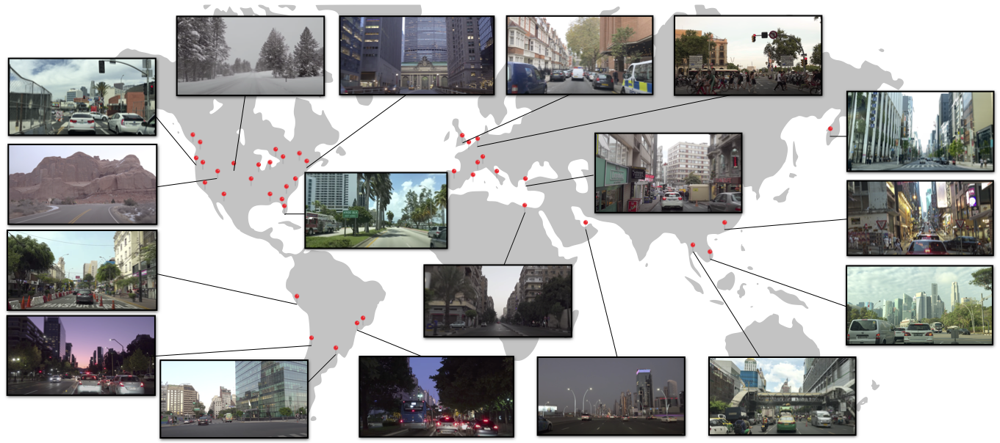
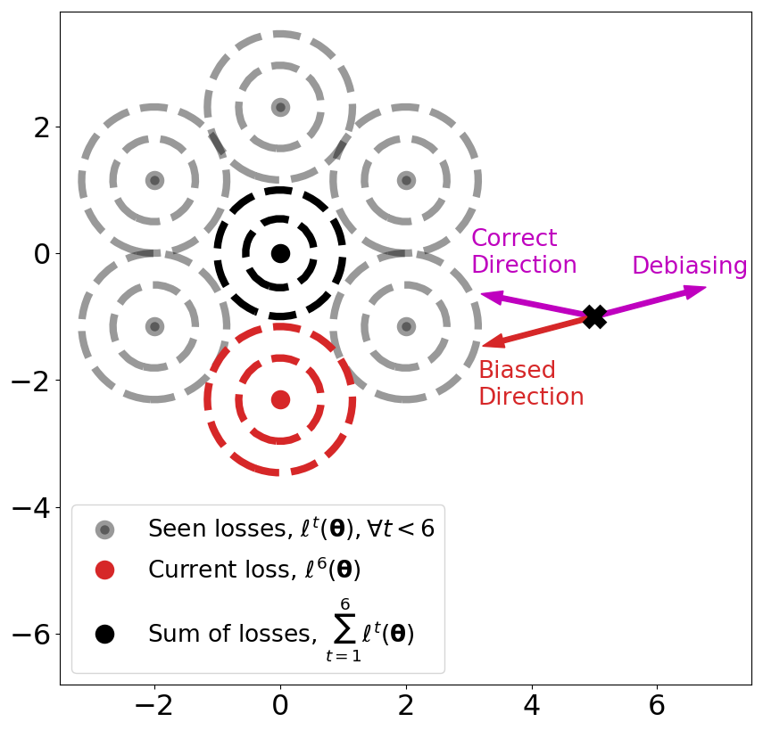
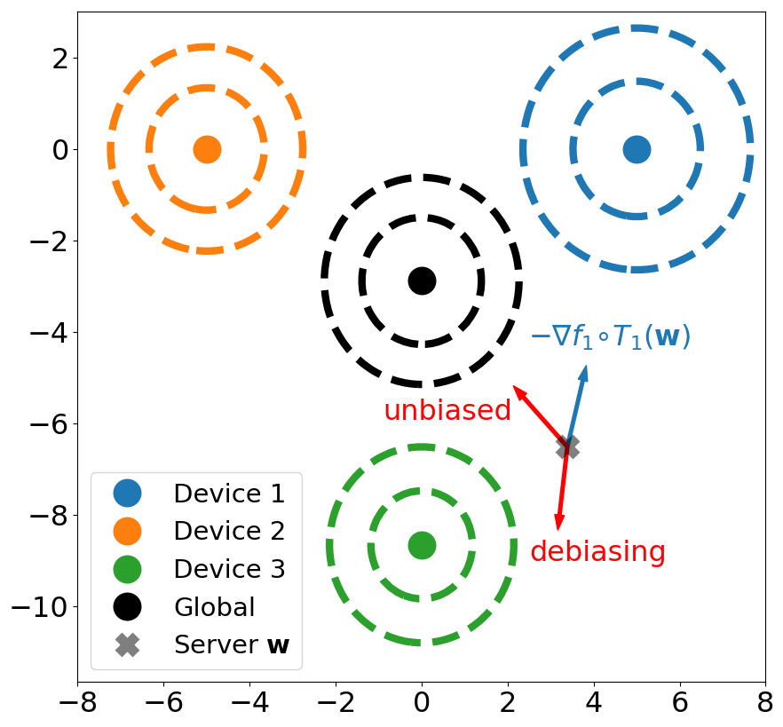
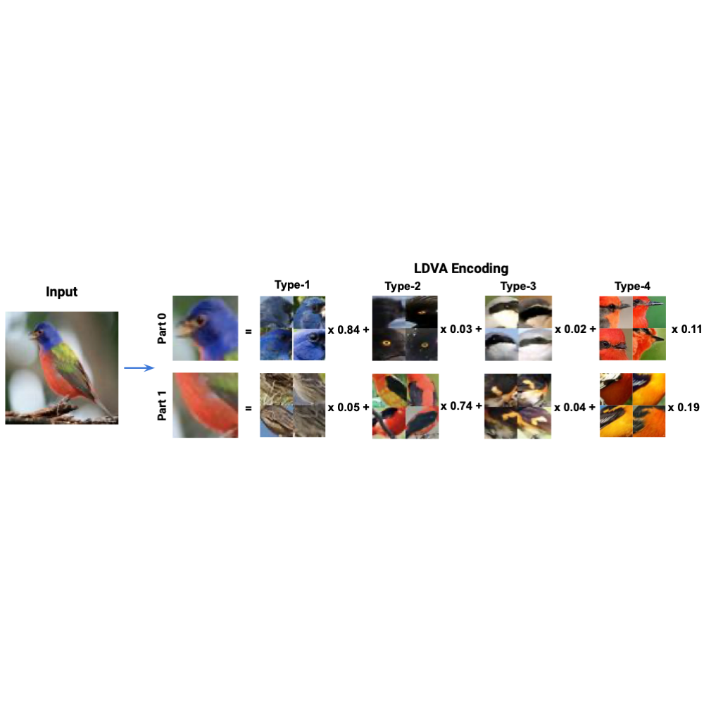

Ruizhao Zhu
I am an applied scientist at AWS working on LLM applications. I obtained my PhD at Boston University, advised by Prof. Venkatesh Saligrama. I also work with Prof. Eshed Ohn-Bar.
My research is mainly about efficient training for deep learning algorithms and its application on computer vision and autonomous driving. Prior to BU, I got my Master's degree at Brown University working with Prof. Benjamin Kimia on vision navigation.
I was fortunate to intern with the Computer Vision team at AWS with Yuting Zhang, Qi Dong and Zhuowen Tu. I also interned at Dataminr, Bosch Research and Duke University.

Industry
I am currently an Applied Scientist at Amazon, where I work on Amazon Quick Suite. My work focuses on building pipelines for code generation agent and developing its corresponding chat system. These efforts span a range of LLM application techniques aimed at making AI-assisted automation more effective and intuitive.
Selected Research Papers
Most of publications are from my PhD works. Prior LLM era, I was interested in efficient machine learning and its applications in computer vision and autonomous driving.

We study how remote sighted guides can assist blind ridesharing users with vehicle identification, entry, and exit in complex urban settings, addressing gaps left by driver-dependent support and emerging autonomous ride scenarios.

Deep Companion Learning (DCL) enhances generalization on training deep neural networks in many settings.

AnyD learns a unified driving model across the world, solving socially heterogeneous cases like left-hand driving and Pittsburgh left.

DOP can automatically parse an object into semantically salient parts. Fine-grained few-shot learning achieves SOTA performance utilizing such representations.

SelfD is a new semi-supervised framework learning scalable driving by utilizing large amounts of online monocular images.

MOML debiases model updates along training. It outperforms baselines on both seen and unseen tasks without saving historical tasks.

A new problem setting for personalized federated learning.

An interpretable object part parsing representation.
Teaching
Professional Activity
Internship at AWS AI (Summer 2023), Dataminr (2022), Bosch Research (2021), SF Tech (2018), Duke University (2016).
Exchange Student at KAIST (Fall 2015, Spring 2016), UCLA (Summer 2014).
Reviewer for CVPR, ECCV, BMVC, ICLR, ICML, NeurIPS, IJCAI, AISTATS Machine Intelligence Research.
Volunteer for CoRL2023 ICML2021.